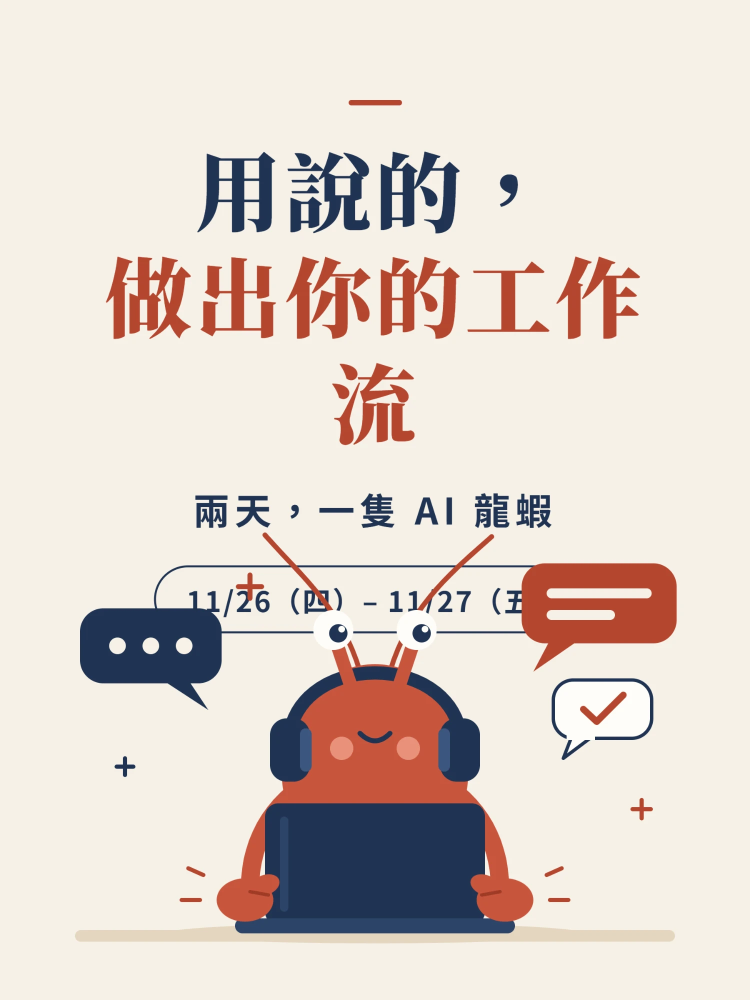

Day One · 10:05黎明 VibeCoding 工作坊
④ 龍蝦基本指令＋模型差異
斜線開頭的那幾個，和各家 AI 差在哪commands and models
10:05 · Commands龍蝦基本指令
/new
開新對話，前面聊的不會混進來。裝了新 SKILL 也要 /new 才認得。
/models
列出可以選的模型；換模型用 /model 加名字，只影響這個對話。
/btw
插一個旁邊的問題，不打斷它手上的工作。
/stop
先停下來，再重新講一次。
Try it每個打一次
/status
現在用的模型、這次對話用了多少⋯⋯
/new
開好新對話了，想做什麼？
Company vs model先打 /status：你現在用的是哪一個？
同一家，高和低差很多：難的用高的，每天自動跑的用低的。
▶ 短片：GPT-6.2 Astra 和 Sol 怎麼挑
2026/11 查的；以 /models 列出來的為準
Same task, different way只看做不做得到，不排哪家比較好
GPT、Gemini 用擴散模型直接生圖；Claude 是寫程式碼把圖畫出來，字最清楚，但不像照片。
Same prompt實際試一次：同一句話，丟給三家
請幫我產生一張直式活動海報（比例 3:4）。 主題：AI 工作坊「VibeCoding 第三梯次」 主角：一隻可愛的紅色卡通龍蝦，戴著耳機，坐在筆電前面打字，旁邊漂著幾個對話框 風格：溫暖的扁平插畫，米白色背景，主色是磚紅色和深藍色，留白多、乾淨 海報上要有這些文字，字要清楚、不能有錯字： - 大標題：「用說的，做出你的工作流」 - 副標題：「兩天，一隻 AI 龍蝦」 - 日期：「11/26（四）– 11/27（五）」 文字放在海報上半部，龍蝦在下半部置中。不要放任何公司 logo、不要放其他文字。
Results同一句提示詞，三家畫出來

產圖找 GPT、Gemini；Claude 不會畫圖，只能用程式碼「畫」。
▶ 短片：AI 怎麼畫圖？（擴散模型）Video同一個要求：做一段影片
不管哪一家，影片卡都是：先寫腳本和分鏡，再拿去影片工具生成。
Your turn · 5 min你的龍蝦用的是哪一個模型？
Why OpenClaw為什麼教你們用龍蝦
10:35 – 11:10
⑤ SKILL：
直接裝好六張必備卡。
裝好新 SKILL 之後，記得打 /new。